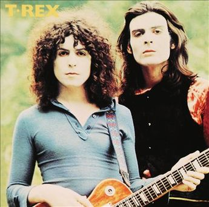

8 апреля 2018 - 7 октября 2018
Новые песни октября, 7 октября 2018


Sleaford Mods - Stick In A Five And Go
Phosphorescent - New Birth In New England
Mudhoney - Paranoid Core
Marc Ribot feat. Tom Waits - Bella Ciao (Goodbye Beautiful)
Matthew Dear - Echo
Seasick Steve - Hate Da Winter
Beatles - Back In The USSR [Esher Demo]
Everly Brothers, 30 сентября 2018

Everly Brothers - All I Have To Do Is Dream
Everly Brothers - Cathy’s Clown
Everly Brothers - Wake Up Little Susie
Everly Brothers - Memories Are Made Of This
Everly Brothers - Bye Bye Love
Everly Brothers - Love Hurts
Buddy Holly - Wishing
Everly Brothers - Love Of My Life
Everly Brothers - When Will I Be Loved
Everly Brothers - On The Wings Of A Nightingale
Everly Brothers - Oh, True Love
Everly Brothers - Stick With Me Baby
Everly Brothers - Some Sweet Day
Everly Brothers - Let It Be Me
Кулёма и культура, 23 сентября 2018


Cars - Bye Bye Love
Burns Unit - What Is Life?
Thelonious Monk – Brilliant Corners
Andy Summers – Brilliant Corners
Madonna - Die Another Day
Joni Mitchell - I Don’t Know Where I Stand
«Electric Ladyland», 16 сентября 2018

Jimi Hendrix Experience - Have You Ever Been (To Electric Ladyland)
Jimi Hendrix Experience - Crosstown Traffic
Jimi Hendrix Experience - Little Miss Strange
Jimi Hendrix Experience - All Along the Watchtower
Jimi Hendrix Experience - Long Hot Summer Night
Jimi Hendrix Experience - Voodoo Child (Slight Return)
Jimi Hendrix Experience - Come On (Part I)
Jimi Hendrix Experience - House Burning Down
Jimi Hendrix Experience - Burning Of The Midnight Lamp
Новые новые песни сентября, 9 сентября 2018


/cover.jpg)
Animal Collective - Hair Cutter
Soft Cell - Northern Lights
Фестиваль «Части Света», 2 сентября 2018
Terakaft - Talikoba
Beat feat. Ranking Roger - Heaven Hiding
Mgzavrebi - Tsremlebs Tuchebze (Tears on Your Lips)
Yat-Kha - Karangailyg Kara Hovaa (Dyngyldai)
Аквариум - Моей звезде
Gulaza - Al’chaiba
Белое Злато - За тихой рекою
Мельница - Ночная кобыла
Ibibio Sound Machine - The Chant (Iquo Isang)
Sheema Mukherjee - Bengali Lullaby
Kimmo Pohjonen - Serenity
Новые песни сентября, 26 августа 2018


Rod Stewart feat. Bridget Cady - Didn’t I
Manu Delago - Parasol Woods
Prodigy - Need Some1
Billy Gibbons - Missin’ Yo’ Kissin’
Kinks - Time Song
Новые имена, 19 августа 2018


Dave Edmunds - I Hear You Knocking
Rockpile - Teacher Teacher
The The – This Is The Day
Umm Kulthum - Alf Leila Wa Leila
Wardruna - Raido
Ambrose Slade - Knocking Nails Into My House
Felt - The World Is As Soft As Lace
Unicorn - Ooh Mother
Big Data Etc., 12 августа 2018


Jimi Hendrix Experience - 1983… (A Merman I Should Turn To Be)
Jimi Hendrix Experience - Moon, Turn The Tides… Gently, Gently Away
Liz Phair - Why Can’t I?
Cat Stevens - On The Road To Find Out
T.Rex - Monolith
Новые песни августа, 5 августа 2018

Daron Malakian and Scars On Broadway - Lives
Tiger Lillies - Don Hector
Death Grips - Streaky
Alice In Chains - The One You Know
Chilly Gonzales - Blizzard in B Flat Minor
White Denim - Magazin
Joe Strummer - London Is Burning
John Prine - Summer’s End
Ólafur Arnalds - saman
Wild Feathers - Stand By You
Люнассад - 2018, 29 июля 2018

Chieftains feat. Paddy Moloney - Le Lys Vert
Lumiere - Cailín Deas Crúite Na Mbó
Traffic - John Barleycorn
Liam Clancy - Green Fields Of France
Chieftains & The Rankin Family - An Innis Aigh
Fisherman’s Friends - The Leaving Of Liverpool
Слова, 22 июля 2018
/cover.jpg)
/cover.jpg)

Talking Heads - Burning Down The House
Cat Empire - The Lost Song
Antonio Carlos Jobim - The Face I Love (Seu Encanto)
Family - Summer ‘67
Johann Sebastian Bach - Herz Und Mund Und Tat Und Leben
Eric Burdon & The Animals - Man-Woman
Gin Blossoms - Break
Remain in Light, 15 июля 2018

Talking Heads - Born Under Punches (The Heat Goes On)
Talking Heads - The Great Curve
Talking Heads - Once In A Lifetime
Talking Heads - Houses In Motion
Talking Heads - Listening Wind
Talking Heads - The Overload
Talking Heads - Seen And Not Seen
Новые песни в июле, 8 июля 2018


Dirty Projectors - Break-Thru
Paul McCartney - I Don’t Know
Gene Clark - Past Tense
Underworld & Iggy Pop - I’ll See Big
Old Crow Medicine Show - Dixie Avenue
Новые имена, 1 июля 2018


Primal Scream - Higher Than The Sun
Teardrop Explodes - When I Dream
Teenage Fanclub - December
Bow Wow Wow - Aphrodisiac
Cameron Graves - Satania Our Solar System
Hoagy Carmichael - Stardust
Zero 7 - Futures
Женщины поют, 24 июня 2018


Emma Tricca - Cobblestone Street
Eleanor Friedberger - He Didn’t Mention His Mother
Liz Phair - Never Said
Ashley Monroe - Like A Rose
Melody’s Echo Chamber - I Follow You
Serafina Steer - Skinny Dipping
Gwenno - Tir Ha Mor
Nina Simone - I Wish I Knew How It Would Feel To Be Free
О чём ваши песни? 17 июня 2018


Frank Sinatra - Say It
Nirvana - Come As You Are
Mothers Of Invention - Call Any Vegetable
Searchers - Needles And Pins
George Harrison - Tired Of Midnight Blue
Seekers - I’ll Never Find Another You
Johann Sebastian Bach - Oboe Concerto In A Major (BWV 1055): Allegro
Новые песни в июне, 10 июня 2018

Matthew Sweet - I Belong To You
Bombino - Oulhin (My Heart Burns)
Jonny Greenwood - Playground (Bass Clarinet)
Ziggy Marley - Circle Of Peace
Oneohtrix Point Never - The Station
Brad Mehldau Trio - Almost Like Being In Love
Beat feat. Dave Wakeling - How Can You Stand There?
Tom Rush - Come See About Me
Ух, какие песни! 3 июня 2018

Johnny Kidd & The Pirates - Shakin’ All Over
Sam The Sham & The Pharaohs - Wooly Bully
Shocking Blue - I’ll Folow The New Sun
Lonnie Donegan - Rock Island Line
Holger Czukay - Persian Love
Cecil Taylor and Buell Neidlinger - O.P.
Julie London - I’m In The Mood For Love
Tim O’Brien - Oh Brother Can You Spare A Dime?
Eric Gales Trio - New Beginnings
Tommy Roe - Hooray For Hazel
Возрождение народа, 27 мая 2018
Mark Spoelstra - Sugar Babe
Odetta - 900 Miles
Weavers - Old Paint (Ride Around Little Dogies)
Joan Baez - Donna Donna
Tom Paxton – Ramblin’ Boy
Fred Neil - Blues On The Ceiling
Dave Van Ronk - You’ve Been A Good Old Wagon
Clancy Brothers & Tommy Makem - The Wild Colonial Boy
Phil Ochs - Outside Of A Small Circle Of Friends
Eric Andersen - Close The Door Lightly When You Go
Bob Dylan - The Times They Are A-Changin’
Джаз Себастьян Бах, 20 мая 2018

Les Swingle Singers - Prélude Pour Choral D’ Orgue N° 1
Les Swingle Singers - Aria (Extr. De La Suite En Ré Majeur)
Les Swingle Singers - Prelude N° 9 (Clavecin Bien Tempéré, Vol. 2)
Les Swingle Singers - Fuge VIII In D# Minor From «Das Wohltemperirte Clavier» Book 2
Johann Sebastian Bach - The Well-Tempered Clavier: Book I: Fugue In C Minor (BWV 847)
Les Swingle Singers - Fugue En Do Mineur (Clavecin Bien Tempéré, Vol. 1)
Les Swingle Singers - Bourrée (Extr. De La Suite Anglaise N° 2)
Les Swingle Singers - Fugue En Ré Majeur (Clavecin Bien Tempéré, Vol. 2)
Les Swingle Singers - Prélude En Do Majeur (Clavecin Bien Tempéré, Vol. 2)
Les Swingle Singers - Prélude En Fa Majeur (Clavecin Bien Tempéré, Vol. 2)
Les Swingle Singers - Fugue En Ré Majeur (Clavecin Bien Tempéré, Vol. 1)
Les Swingle Singers - Canon
Les Swingle Singers - Sinfonia (Extr. Partita N° 2)
Новые песни в мае, 13 мая 2018

Father John Misty - Disappointing Diamonds Are the Rarest of Them All
Blabbermouth - Deep State
Akita - Пустой
Florence And The Machine - Sky Full Of Song
Shopping - Asking For A Friend
Sigur Rós - 64º46’34.1’’N 14º02’55.8’’W
Kabaka Pyramid - Can’t Breath
Аквариум - Из Тамбова с любовью
Frank Turner - Be More Kind
Jon Hassell, 6 мая 2018
Jon Hassell & Brian Eno - Ba-benzélé
Jon Hassell - Power Spot
Jon Hassell - Caracas Night September 11, 1975
Jon Hassell - Dream Theory
Jon Hassell - Last Night The Moon Came
Jon Hassell - Delta Rain Dream
Белтайн, 29 апреля 2018

The Hound + The Fox - The Parting Glass
Líadan - The Irish Girl
Bruno Major - Places We Won’t Walk
Mànran - Là Inbhir Lòchaidh
Sinéad O’Connor - Molly Malone
Albion Band - Harvest Anthem
Robin Laing - The Bruichladdich Dram
Maddy Prior & June Tabor - Somewhere Along The Road
Silly Wizard - The Pearl
Протест красотой, 22 апреля 2018


Roger McGuinn - Shenandoah
Roxy Music – Love Is The Drug
Cat Stevens – If I Laugh
Paul Simon - Run That Body Down
Andy M. Stewart – The Orphan’s Wedding
Семеро Из Под Камней, 15 апреля 2018
Квартет Анны Карениной - Зеркало Баргельда
Квартет Анны Карениной - Стрепетарх
Русско-Абиссинский Оркестр - Llar-A-Hlar
Квартет Анны Карениной - Большой Стрепетарх выходит на охоту
Квартет Анны Карениной - Капитан Воронин встречает гигантского муравья
Квартет Анны Карениной - Наташа Ростова плюс
Семеро Из Под Камней - Highlands Of Kiev
Русско-Абиссинский Оркестр - Bar-do
Квартет Анны Карениной - Лошадь, как твоё имя?
Русско-Абиссинский Оркестр - Aballon Sayo
Семеро Из Под Камней - Секрет зимнего дня
Семеро Из Под Камней - Созерцает с камня безоар
Семеро Из Под Камней - Пылающее сердце зебры
Beatles в XXI-ом веке, 8 апреля 2018


Beatles - Please Mister Postman
Beatles - Drive My Car
Beatles - Cry Baby Cry
Beatles - If I Fell
Beatles - I’m A Loser
Beatles - Norwegian Wood (This Bird Has Flown)
Beatles - Taxman
Beatles - Ticket To Ride